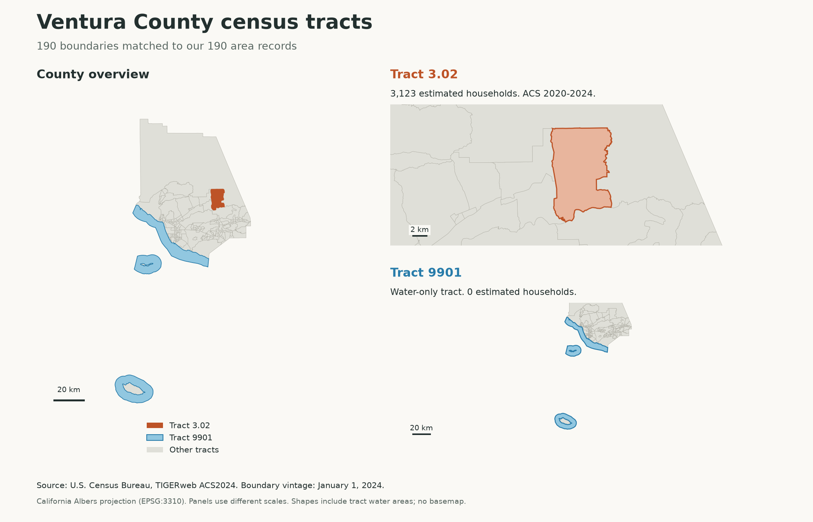

Public data · Web application · September 2026
FiberScout
Compare housing and broadband data, test fiber expansion assumptions, and keep the sources behind each result.
- Research scope
- 190 census tracts
- Automated checks
- 97 tests passed
- Public release
- Research demo
Research with a trail back to the source.
Housing estimates, internet subscriptions, and reported fiber availability describe different things. Comparing them takes more than putting the numbers in the same table.
FiberScout brings Census estimates, FCC reports, and planning findings into one workspace for Ventura County, California. Each measure keeps its source and reporting period. Missing values remain visible, and observed data stays separate from the assumptions entered into the calculator.
A user can compare tracts, map the data, change seven hypothetical build assumptions, and export a PDF or CSV report. The account application also saves scenarios and their revision history.

Saving, revising, and trying again.
The full account application adds saved scenarios, comparison, and exports from a selected revision. This walkthrough shows the application running locally with fictional inputs.
Read the walkthrough transcript
- Open a saved scenario. Its name, notes, tracts, and assumptions return from PostgreSQL.
- Change assumed adoption from 30% to 35%. The calculator updates immediately.
- Save revision 2. The original revision remains available.
- Select revision 1 for export. Later edits do not change that saved snapshot.
- Review a conflict between this tab’s 45% draft and the latest saved value of 36%. Neither is silently overwritten.
- Duplicate the retained draft and name a new scenario.
- Stop the service and try a save. The page keeps the draft and offers a retry.
- Restart the service and retry. One scenario is saved.
- Refresh and reopen it. The saved values are still there.
What you can try online: the public demo includes the research views, calculator, and reports. Accounts and saved scenarios run in the local application. The account backend has not been deployed to public hosting.
From public data to a saved scenario.
- Python
- Collects, cleans, checks, and imports the research data. Repeated FCC reports are handled separately from distinct service locations.
- SQL & PostgreSQL
- Store research records, accounts, scenarios, and revisions. PostGIS supports geographic queries in the research application.
- React & TypeScript
- Provide maps, comparison views, forms, and immediate calculation previews.
- Next.js
- Organizes the web application, handles local research routes, and builds the static frontend.
- C# & ASP.NET Core
- Handle sign-in, ownership checks, input validation, server calculations, and saved-scenario requests.
- Docker & GitHub Actions
- Package the local application and run the Python, web, and C# checks. Azure deployment templates are prepared.
What happens when someone clicks Save?
- The browser sends the scenario’s inputs and source versions to the API.
- The API checks the signed-in account, validates the inputs, and calculates the results again.
- PostgreSQL saves the scenario and its revision in one transaction. Both changes succeed together or neither is kept.
- The browser shows the saved revision after the server confirms it.
Three details behind a reliable save.
A retry should not create a second scenario.
Each create request includes a retry key. If the same user sends the same request again, the API returns the original result. The key and scenario are stored together so a failed write cannot leave a partial save.
Two tabs should not erase each other’s work.
An edit includes the version the user started with. If another tab has saved a newer version, the API returns a conflict. The interface keeps the draft and lets the user review the difference.
An old report should still mean the same thing.
Each revision keeps its assumptions, calculated results, model version, and source versions. Exporting revision 1 uses that saved record even after revision 3 exists.
Checked on GitHub and in the application.
On September 15, 2026, all three GitHub Actions jobs passed, along with the production web build.
- 42 Python tests
- 35 Web tests
- 20 C# tests
The checks cover data handling, calculation edge cases, account isolation, repeated creates, conflicting updates, and database rollback. The C# integration tests run against a temporary PostgreSQL database.
Recorded local checks also covered reopening a save after restart, backup and restore, a failed save with a retained draft, and exporting an earlier revision. These are development checks; no outside user study has been completed.
Scope and next steps.
FiberScout supports research. Its scenario results use hypothetical costs and adoption assumptions, not a forecast of demand or a recommendation to build.
The data combines Census estimates for 2020–2024 with FCC availability dated December 31, 2025, revised September 3, 2026. It does not calculate a fiber coverage percentage from incompatible counts. Independent review of planning findings and complete FCC location geometry verification remain open.
The next steps are to collect feedback from someone trying the workflow and, if useful, deploy the account service. The source repository is currently private.
Development process
Some parts of FiberScout involved languages and frameworks I was still learning. I used LLMs to explain unfamiliar code, answer follow-up questions, and walk through how the frontend, API, and database fit together. These explanations gave me examples from the project to study, so I could connect what I was learning to how the application actually works.